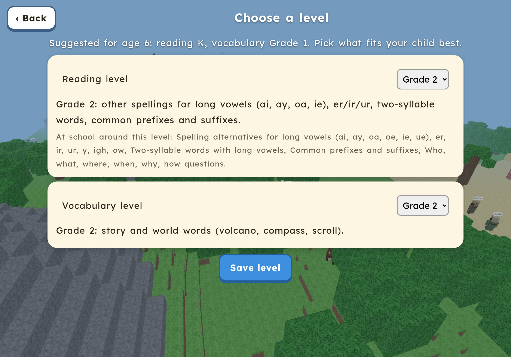
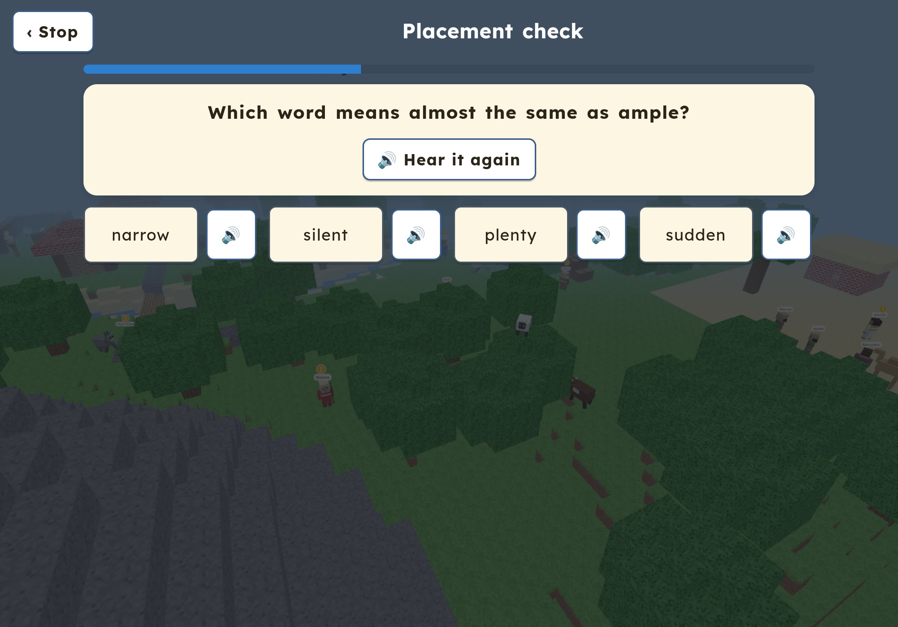
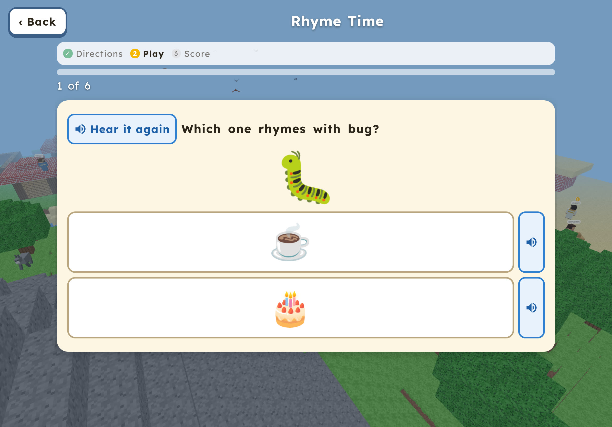
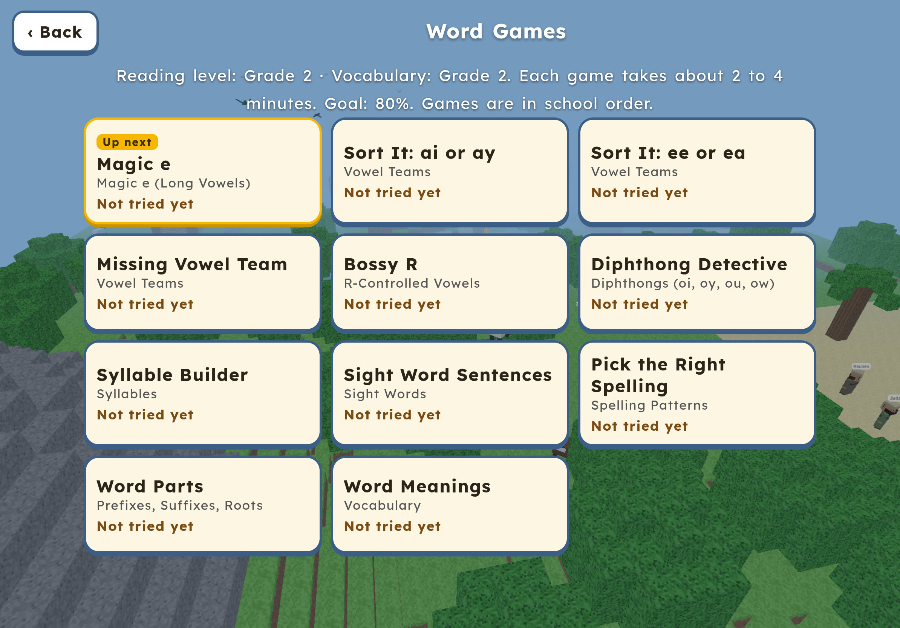
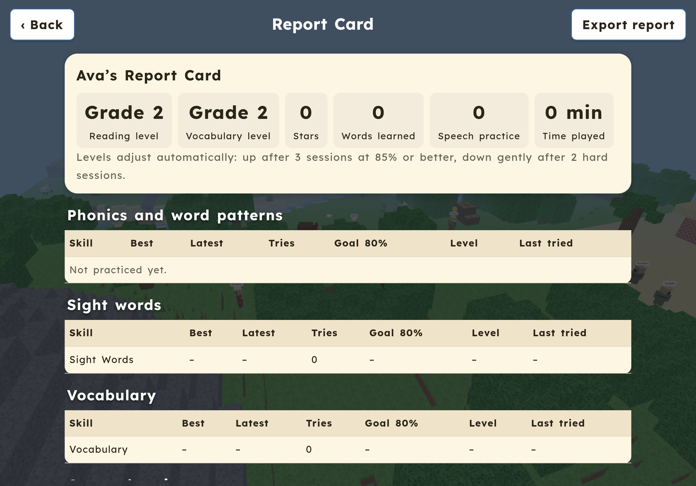

Take a look






What’s inside
Up to 6 players
Each child has a name, an age, a look, and their own saved progress and world. Tap a face to switch players.
Placement quiz or pick a level
A short quiz (about 5 to 8 minutes) adjusts to your child’s answers and suggests a reading level and a vocabulary level. You can accept or change it. Kids aged 3 and 4 get a listening-only version.
Pre-reader mode
For ages 3 to 4: everything is read aloud with pictures. Kids just listen and tap. A big “Go” button walks to the next goal, so there’s no joystick to learn.
Grows with your child
Levels run from Pre-K to Grade 8: letter sounds and rhymes, phonics, sight words, prefixes and roots, context clues, and longer passages. Levels adjust slowly as your child plays.
Respects age
Reading level and age are separate. A 13-year-old practicing early phonics sees calm, grown-up wording and styling, not baby talk.
Follows school order
An optional setting (on by default) orders the games the way topics come up in Montgomery County Public Schools (Maryland), based on public curriculum outlines and Maryland standards.
Speech practice
“Say It With Me” and “Read It Aloud” let kids practice saying words and verses and hear themselves. Nothing is graded, and recordings are never saved.
7 Bible missions
Noah’s ark, David the shepherd, Moses, the Good Samaritan, loaves and fish, Joseph forgives, and honesty. No violence and no romance.
Levels
For parents
Faith Craft Family practices reading, vocabulary, and speech skills while your child plays. Not a medical or therapy product.
- Parent area with a PIN: report cards for each child, levels, lock levels, retake the placement quiz, focus sounds for speech practice, and adding or removing players.
- Report card: phonics, sight words, vocabulary, comprehension, speech practice count, level history, and time played. You can print it or save it as a file.
- The placement quiz is a quick starting-point estimate, not a formal reading assessment.
- Nothing to buy. No ads, no purchases, no chat with strangers.
Privacy
Faith Craft Family collects no information about your children.
- No data collection. Profiles and progress are saved only on your own device.
- No account and no sign-up.
- No ads, no trackers, and no purchases.
- No chat. Your child cannot talk to strangers.
- Works offline after the first load. Open it once with internet, and after that it works without it.
- Microphone use is optional and only for speech practice. Recordings stay in memory and are never saved or uploaded.
This page uses no cookies, analytics, or outside services.
Add to Home Screen on iPad
Put Faith Craft Family on your iPad like an app, so it opens full screen and works offline.
- Open this page in Safari on the iPad.
- Tap Play Faith Craft Family and wait for the game to load.
- Tap the Share button (the square with an arrow pointing up).
- Tap Add to Home Screen, then Add.